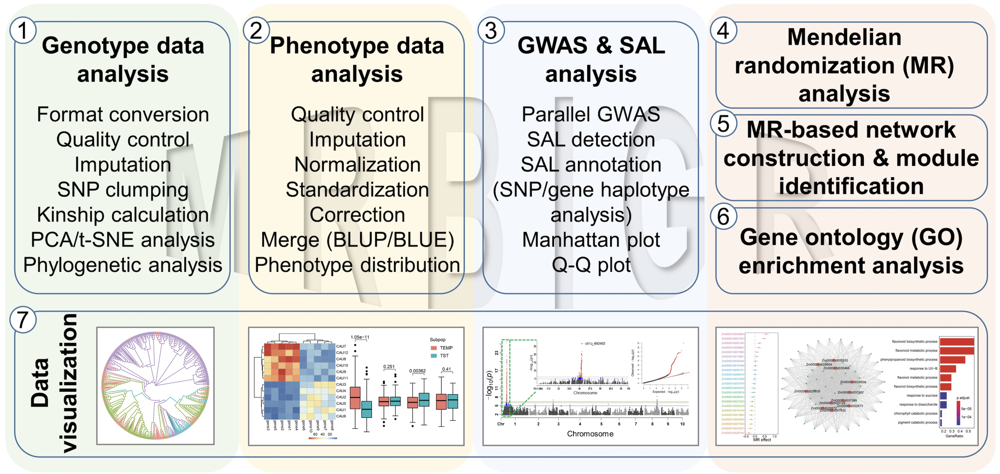

MRBIGR

MRBIGR (Mendelian Randomization-Based Inference of Genetic Regulation) is a versatile toolkit designed for the entire spectrum of mulit-omics genome-wide association study (GWAS) workflows, encompassing data preparation (pre-GWAS), GWAS analysis, and extended post-GWAS investigations. During the pre-GWAS phase, the toolkit includes utilities specifically tailored for the preprocessing of both conventional phenotypic records and multi-omics datasets, aiming to derive pertinent statistical summaries and ensure data readiness for robust GWAS analyses. In the GWAS and subsequent post-GWAS stages, MRBIGR offers a range of efficient functionalities such as conducting GWAS, detecting significantly associated loci (SALs), annotating genetic variants, performing lead SNP and gene-based haplotype analyses, and facilitating Mendelian randomization (MR) analyses of multi-omics data.
- Installation of MRBIGR for installation and quick start of MRBIGR.
- Genotype data analysis for the module of genotype based analysis.
- Phenotype data analysis for the module of phenotype based analysis.
- GWAS & SAL analysis for the module of GWAS and QTL related analysis.
- Mendelian randomization analysis for the module of Mendelian randomization analysis of multi-omics data.
- MR-based network analysis for the module of MR-based network construction and module identification.
- Gene ontology analysis for the module of Gene ontology analysis of network.
- Data visualization for the module of training dataset refinement and design.
Github: MRBIGR
User manual(PDF)：User manual
QuickStart: MRBIGR QuickStart
Contact us: xufeng9527@cau.edu.cn
Note: Cademic users can used for free directly and please contact us for commercial use.